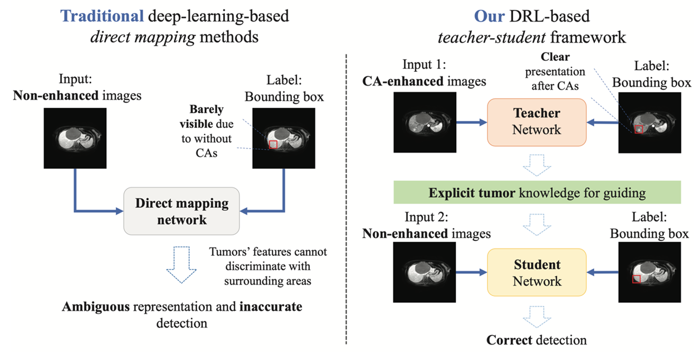
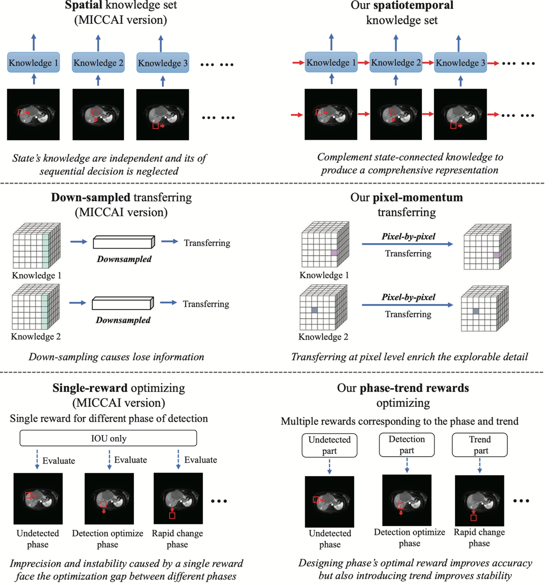

The method of detecting liver tumors without the use of contrast enhancement is particularly beneficial for
patients allergic to contrast agents or pregnant women, as contrast agents may pose risks to these groups.
Liver tumor detection without contrast enhancement can provide diagnostic results that rival those obtained
with contrast agents, highlighting the potential of non-enhanced imaging as a reliable alternative for liver
tumor detection. As illustrated in Fig. 1, the non-contrast-enhanced detection method brings multiple
benefits: firstly, it eliminates the high risks associated with contrast agents, especially for patients
with renal failure who are prone to deadly nephrogenic systemic fibrosis; secondly, it reduces the
experience gap among radiologists by eliminating the subjectivity and non-reproducible nature of visual
assessment, thereby reducing high observer variability; thirdly, it simplifies clinical workflows by
reducing the need for multiple scans, thus saving costs and clinical resources.
The method of detecting liver tumors without contrast enhancement faces a significant challenge, namely that
liver tumors may be invisible on non-contrast-enhanced images. The teacher-student deep reinforcement
learning has shown great potential to be a solution. More specifically, on contrast-enhanced images, liver
tumors are very easy to see due to the additional enhancement of the tumors. Conversely, on
non-contrast-enhanced liver images, tumors may be barely visible or even invisible. This makes traditional
deep learning technologies based on direct mapping struggle to learn accurate representations of the tumors
and provide reliable detection. The teacher-student deep reinforcement learning has become a very promising
method to address detecting hard-to-identify liver tumors without contrast enhancement. This framework uses
deep reinforcement learning to improve the feature space of the tumors, consisting of two deep reinforcement
learning-based modules: a teacher network and a student module. The teacher network learns from
contrast-enhanced liver images, while the teacher network learns from non-contrast-enhanced liver images.
Then, the framework uses the tumor detection knowledge learned by the teacher network to guide the teacher
network in detecting hard-to-identify tumors in non-contrast-enhanced images.

Fig. 2 The teacher-student deep reinforcement learning framework has more advantages than the traditional
deep learning method of constructing direct mapping in this liver tumor detection task without contrast
agent enhancement.
At MICCAI-2022, the authors introduced a ternary knowledge set to construct the teacher-student deep
reinforcement learning framework, significantly enhancing its performance in liver tumor detection without
contrast enhancement. This ternary knowledge set, including actions, rewards, and features, is collected
from the teacher network, and shared with the student model to guide its exploration. This ternary knowledge
enables the student network not only to be guided on what action to take but also to understand why to take
that action by using the features, which provide the underlying explanation and purpose for the action and
reward.

Fig. 3 This paper proposes a new spatiotemporal knowledge teacher-student reinforcement learning (SKT-RL)
method, which extends the MICCAI-2022 conference paper from three aspects, thereby improving the liver
tumor detection results without contrast agent enhancement comprehensively.
In this paper, the authors propose a new Spatiotemporal Knowledge Teacher-Student Reinforcement Learning
(SKT-RL) method to enhance the construction, transfer, and optimization of the aforementioned ternary
knowledge set, thereby improving the results of liver tumor detection without contrast enhancement. As shown
in Fig. 3, first, SKT-RL includes a unique spatiotemporal ternary knowledge set that integrates the action
and its underlying rationale of deep reinforcement learning, i.e., the dual rationale within each state
(space) and within related historical states (time). In deep reinforcement learning sequential
decision-making, the integrated representation of 'what to do' and 'why' significantly enhances the teaching
capability of the framework. Secondly, SKT-RL features a pixel-level momentum transfer strategy, which
transfers sequence state features and actions at the pixel level, enhancing the accuracy of the knowledge
received by the student module. Here, SKT-RL introduces an adaptive controller, gradually reducing the
student module's dependency on the teacher module. Finally, SKT-RL also includes a new phase trend reward
function, combining different detection phases and historical trends. This function allows the teacher
network to adaptively select the best method for evaluating actions, thereby achieving more targeted network
training and increased robustness.